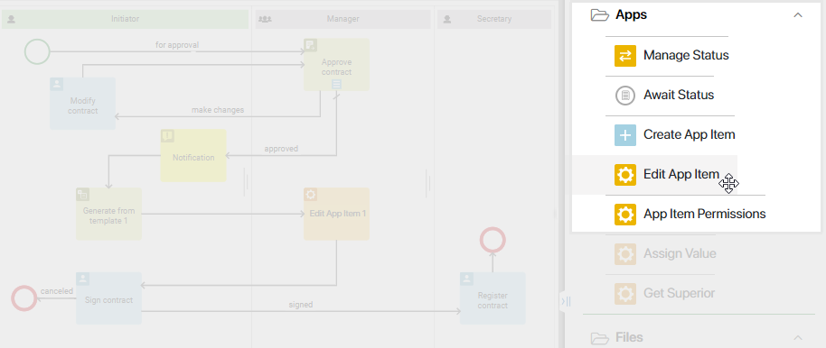

The Edit App Item activity is used to edit fields on the app item page during the execution of a business process. With this activity, you can add a file to a contract page, change the amount in an order, edit the dates of bills and additional agreements, and so on. You can change the item data manually or automatically.
How to use the Edit App Item activity
As an example, let’s take a look at the Contracts app. An employee creates an app item and enters all the related information, such as the total amount, payment dates, discount percentage, and so on. However, the Contract file field remains empty because the file will be created later on in the course of the process.
As soon as the employee saves the app item, a business process is launched. In the course of this process, the finance specialist approves the data entered into the app page. Next, according to this data, a contract file needs to be created. This can be done automatically with the help of the Generate from template activity, or the employee could do it manually within the assigned task. The generated document must be added to the app item page in the Contract file field. To do this, the Edit App Item activity is used in the business process.
Set up the Edit App Item activity
Go to the process page and click the gear icon on the right panel to open the System elements tab. Drag the Edit App Item activity to the process diagram and place it where editing an app item will be necessary.

Double-click on the activity to open the settings.
General tab
Fill in the fields in the opened window:
- Name*. Enter the name of the activity as it will be shown on the process diagram.
- Task name. Enable the Generate name from template option to add context variables to the name that the executor will see in the task list and on the task page.
- Template*. Click the {+} icon in the right corner of the field and select a variable. You can also add conditions and functions as you would for an item name template. This will help generate a more informative name.
If this option is not used, the text specified in the Name* field will be displayed in the task list and on the form.
- Variable*. Specify the App type variable from the business process context that refers to the app item you wish to edit. If the variable does not yet exist in the process context, click the Create a new variable button.
When you specify the context variable, you can rename it or add a description. To do this, click the Change variable settings button. The changes made will be displayed in the context of the process. - Update type. Specify the way to change the item:
- Manually. The user or a group of users specified in the swimlane will be given a task with the form of editing an item. The fields on the page will be filled with the previously specified data, which can be edited. The user can also cancel the editing of an item if a corresponding connector is configured for the activity.
If the swimlane with the activity includes a group of users, the task of changing the item will be assigned to all the employees in this group. As soon as someone starts working on the task, it will disappear from the task list of other employees.
- Automatically. The item will be created automatically. Item fields will be filled according to the settings specified on the Field Values tab.
- Reassignment. The option is displayed if the Manually update type is selected. Enable this option for the task executor to be able to reassign the task to another user.
- Notification. The option is displayed if the Manually update type is selected. Select it so that the task executor can receive the notification about its assignment to the #Activity stream. To send an additional notification about the task to the executor’s email, they can enable the option to send notifications about new tasks to their email in the profile settings.
Field Values tab
This tab appears after selecting a variable on the General tab.
If you selected the Automatically method, specify the field to be changed in the App field column. In our case, it is Contract file. In the Process variable column, specify the corresponding process variable. We have specified the File variable because the contract created from a template will be stored in it.
If you selected the Manually method, you can also map fields to variables. For example, if the contract file is still generated from a template, the executor will receive a task of editing the item. The generated file will be stored in the app field you specified in the mapping settings. The employee will be able to check or replace it before saving the changes and closing the task.
Please note that only app fields and process context variables of the same type can be mapped.
Connectors tab
This tab is available when you select the Manually item creation method.
Here you can configure the outgoing connectors of the activity, which will be displayed to the user as buttons in the item editing task.
Please note that the Edit App Item can have only two outgoing connectors: to save the item and to cancel its creation. The connector to save the item should be marked as the default one.
Also, on this tab, you can change button names, add confirmation text, select colors, etc. To go to the settings, click on the connector name. Read more in the Connectors article.
Once you have specified all the settings, click Save.
Now, in the course of the process, as soon as the contract is approved, the created file will be saved to a variable and then displayed in the field on the app item page.
Found a typo? Select it and press Ctrl+Enter to send us feedback